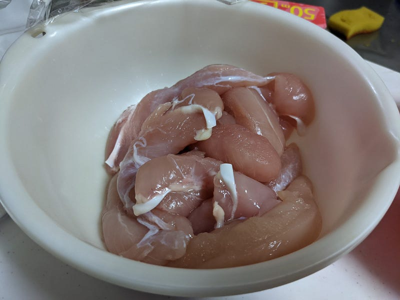
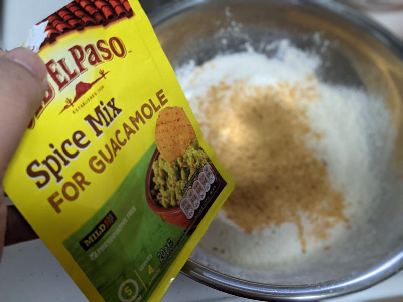
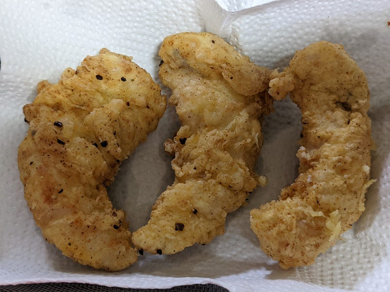
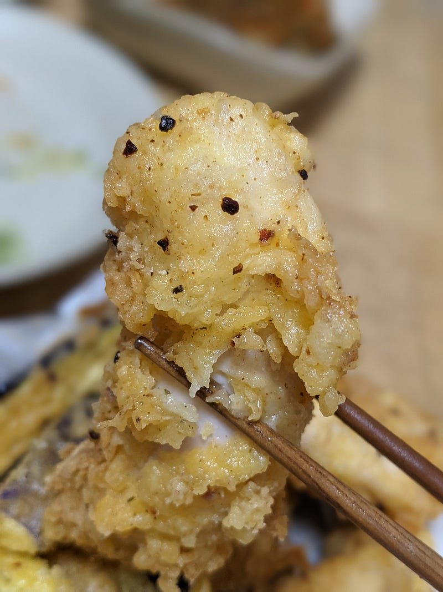
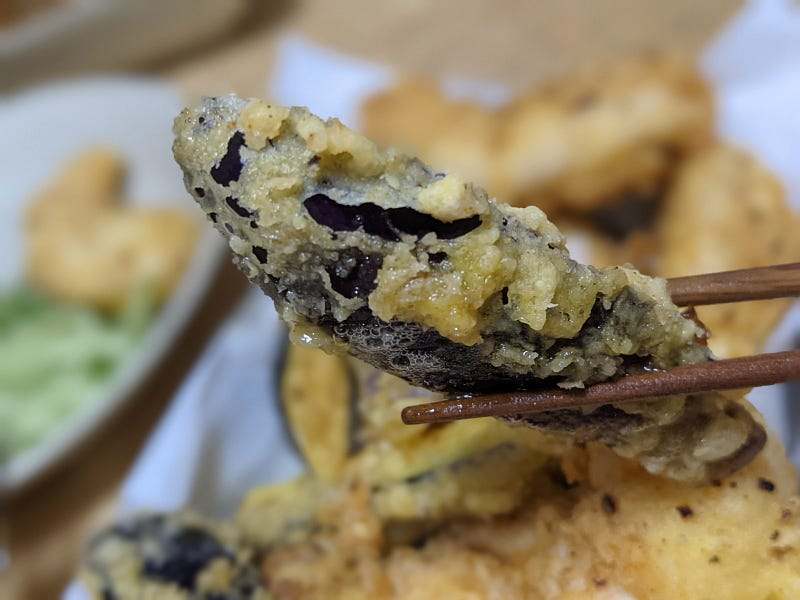

お手軽にチキンクリスプを作る
お手軽にチキンクリスプを作る
チキンクリスプとは、鳥のささ身を使った揚げ物である。ただのフライとどう違うのかと言えば、いわゆるフリットのように小麦粉の衣をまとっており、これをカリカリに揚げて外側はカリっと、うちがわは柔らかくジューシーに仕上げる、アメリカではすごく一般的な食べ物だ。
ちなみに名称はチキンフィンガーと呼ばれるところもある。正直どっちでもいいｗ
さて、作り方は簡単だ。鳥のささ身肉に卵と小麦粉ベースの衣をつけて180℃とかで10分強あげればよい。問題は衣だ。
わりと塩とスパイスの効いた衣が欲しい。そうするとカーネルサンダースよろしく色々と入れないといけない感じになり、激しく面倒くさい。そういうことで今まで作るのをためらってきた。
しかしある日ひらめいたのです。うちには常備しているワカモレの素があるではないか、と！
Guacamole is a popular accompaniment in Mexico. Widely used in signature recipes such as Carne Asada Tacos or Carnitas…www.oldelpaso.com.au
こいつならもう最初から色々入っているので、小麦粉にまぜてあとは塩味をつければできるやん。ということでやります。
ささみはどかーんと。これで確か12～14本くらいだったはず。水気をふいて、軽く塩をしておいておきます。

小麦粉… どれくらいだろうｗ 多分100gくらいかな… ホットケーキの素一袋よりは少ないはず。そこに塩を大匙1杯くらいと胡椒、そしてワカモレの素を混ぜます。ワカモレの素はこのエルパソのやつだったらだいたい袋の半分くらいでしょうか。

卵液は卵1個を水で溶くくらいがちょうどよいと思います。
粉の味加減を確認したい場合は、180℃の油を用意しておいて、菜箸の先に卵液を少しつけて、粉の中に箸を入れて、それをちょっと油であげてから、箸についた衣の味を見ると簡単です。
ささみのほうは粉→卵液→粉、という感じで厚めの衣をつけます。冒頭で紹介したアメリカの方の動画ではさらに衣をつけるために先に粉にダマを作ってましたね。僕はそこまでしませんが、そのあたりはお好みで。
あとは油の温度が下がりすぎないよう一度に揚げる量を調節しながら、ささみ1本につき10分前後揚げていく感じ。ささみがほぼ常温の状態から揚げてるならたいていは衣の色がおいしそうになったらもうできてます。
油を切っておいておけばもういつでもかぶりつけますね。アメリカだとたいていこれにケチャップがついてきますが、日本人はこのままでいいような気がする。

ほんのりスパイスやオニオンパウダーの香りがただよって揚げたそばから食べたくなりますが、熱々すぎても食べられないので、油を切りながら少し待ちましょう。
少し落ち着いたところで食べればカリっと始まり、ふわっと口の中でほどけ、ジュワっと肉汁が出てくるうまいうまいチキンクリスプのできあがりでございます。

そしてその間に多分衣が少し余るので、余った衣で野菜とかをついでに揚げてしまうとよいです。うちでは定番はナス。

このナスもまぁ香ばしくて、中はトロトロでうまい。ただ揚げ物は揚げ物ですので、なにか箸休めをつくっておきましょうね。キュウリやキャベツの千切り、汁物、サラダなんかがおすすめです。
というわけで、チキンパルメザンに続く、「アメリカ人はヘルシーな部位の肉を油とかでカロリーまみれにするのがつくづくすきだなぁ」料理のチキンクリスプでした。